Been into a week of rebuilding Aperilex with Claude Code, focusing on the domain and infrastructure layers to build the solid foundation for the app. The experience has been intense, filled with learning and development challenges. Never thought about this kind of speed before but here we go. Today marks the completion for both phases and I’m excited to see how it all comes together.
Technical Details
This blog will not cover too many details about the technical implementation, as they have already been documented in the GitHub repo, each phase, the roadmap, etc. I will continue focusing on lessons learned during the process especially coding with Claude Code.
Working with Claude
In the last post we briefly touched the workflow of how to work with Claude Code. This week I have discovered new insights and techniques that have further enhanced my experience.
-
Define Explore-Plan-Code-Test Workflow: The newly discovered workflow has been a game-changer. It involves exploring the problem, planning the solution, coding it, and then testing it. This structured approach has helped me stay focused and organized throughout the development process, it may take much longer time to complete a task as it uses multiple
subagentsandhard-thinkingmode but it ensures that the code is well thought out and maintainable. I have found out this technique here and also more details on Anthropic’s blog. -
Iterative Development with Small and Focused Task: The iterative nature of working with Claude Code has allowed me to refine my code continuously. Following the detailed plan laied out in the
PHASE.mdfile andDETAILED-PHASE-PLAN.mdbefore each paase (In Aperilex case, Phase 2 - Domain Layer and Phase 3 - Infrastructure Layer), I have been able to break down the SUPER complex tasks into smaller, manageable chunks. This has made it easier to test and debug the code, ensuring that each component works as intended before moving on to the next. After each iteration of finishing each chunk, I would review the code with Claude Code and run all the tests before writing and summrizing up the work and update the state of the project, then move into next chunk. -
Using Claude Code for Code Review and Test: After completing each chunk, I would ask Claude Code to review and test the code. This has been incredibly helpful in catching potential issues early on and ensuring that the code been implemented so far is coherent and robust. Defining in
CLAUDE.mdof what code quality standards to follow and what tests to run has been essential in maintaining a high level of code quality throughout the development process. In my case, I’ve defined to ask Claude to runMppy,Ruff,Black,isortandBanditto ensure the code is clean, well-formatted, and adheres to best practices. Then runpytestto ensure the code is functioning as expected no matter unit tests, integration tests, or end-to-end tests, or even scripts to test the functionality of the application. This was a dream before those AI Coding tools existed but now it’s a reality. I can just focus on the logic and let Claude Code handle the rest. If you are not sure about it, before next new task starts, run the check and tests again to see if everything works as expected. After all, it’s not hard to get lost while they can generate so much code in a short time which feels overwhelming sometimes. -
Documentation and Context Management: Keeping the documentation up-to-date has been a crucial part of the process. The
CLAUDE.md,README.md, andPHASE.mdfiles have served as a central hub for all the information related to the project. This has made it easier to track changes, understand the architecture and design decisions, and provide context for future development. -
Architecture Review and Refinement: The architecture of Aperilex has been refined significantly during this process. As I mentioned before, at the beginning what Claude Code could provide you with is a looking-grand plan which may not be perfect for the project while the development it’s going on. With the ability to iterate, we can review the architecture and make necessary adjustments as we go. This has led to a more robust and scalable architecture that can handle the complexities of the application. This has been the greatest learn for me how to control your project like a real architect, system designer, not just a feature coder. The architecture is the backbone of the application, and having a solid foundation is essential for long-term success.
-
Iteration, Iteration, and Iteration…
Lessons Learned
- Speed and Efficiency: Working with Claude Code has significantly increased
mycoding speed. The ability of Claude Code to create the application structure and generate code snippets on the fly has streamlined the development process. But I also (always) keep that in mind that speed is not equal to quality. So while I am so excited about what I can achieve with Claude Code, I always be cautious about what it writes for me, that’s why the testing stage in each iteration is so important. - Understanding Domain and Infrastructure Layers: Diving deep into the domain and infrastructure layers has given me a better understanding of the overall architecture. This knowledge of Clean Architecture and Domain-Driven Design is crucial for building scalable and maintainable applications.
- Continuous Learning: The challenges faced during this process have always been the overwhelming amount of information to digest, but they have also been opportunities for growth. Each iteration has taught me something new about software development, architecture, and working with AI tools. The learning curve has been steep, but the rewards have been worth it. Luckily, you have a personal teacher to ask if you have any questions or doubts, the biggest warning is, try not to split away from your questions and the context of the project, otherwise you will get lost in the sea of information and the AI may not be able to help you as much as you want.
Latest Diagram of the Architecture

Again, as usual, here is the latest architecture diagram of Aperilex. It shows the whole architecture of the application, including the domain layer, infrastructure layer which have been implemented so far, and how they interact with each other. The diagram is a great way to visualize the architecture and understand how the different components fit together. And more I think about it, the more I feel like this is what I like to do, designing the architecture of a software system, making it clean, maintainable, scalable and of course, productionizable for eventual real uses. This is the real joy of software development for me, thanks to the AI tools like Claude Code.